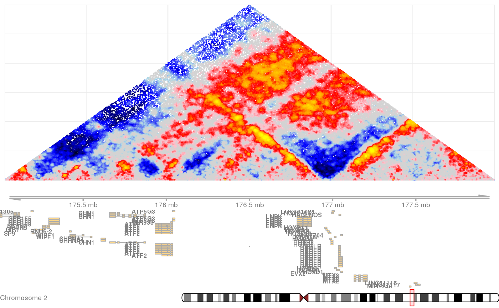

shaman_plot_map_score_with_annotations
shaman_plot_map_score_with_annotations(genome, points_score, interval_range, point_size = 0.1, misha_tracks = list(), mt_colors = getOption("shaman.track_colors"), mt_ylims = NULL, annotations = list(), a_colors = getOption("shaman.annotation_colors"), add_genes = T, add_ideogram = T, add_axis = T, gene_stacking = "squish", gene_size = 0.7, track_size = 0.8, annotation_size = 0.7, fig_fn = "", fig_width = 900, fig_height = 5/6 * 900)
| genome | Name of reference genome (e.g. "hg19", "mm10") |
|---|---|
| points_score | A dataframe containing the points (start1, start2) and their normalized score. |
| interval_range | 1D interval (chrom, start, end) specifying the region to plot |
| misha_tracks | List of 1D track expressions (virtual tracks also supported) which can be extracted from. |
| mt_colors | Array of colors, one for each misha_track, which will be used to plot each 1d track. |
| annotations | List of gintervals highlighting annotated regions. |
| a_colors | Array of colors, one for each annotation set. |
| add_genes | Boolean flag indicating whether to show gene annotations. |
| add_ideogram | Boolean flag indicating whether to add an chromosomal ideogram. |
| add_axis | Boolean flag indicating whether to show chromosmal axis. |
| gene_stacking | Describes the viewing option of the genes track. Can be either "squish", or "dense". |
| gene_size | Size of gene annotation view. |
| track_size | Size of track view. |
| fig_fn | Name of png file to output to. Empty string will cause the figure to be plotted to the current device. |
| fig_width | Width in pixels of output png figure. |
| fig_height | Height in pixels of output png figure. |
| my_ylims | Y-axis limits for each misha track. If not provided, generated automatically based on the data to be displayed in the region. |
| annot_size | Size of annotation view. |
Plots observerved hic contact matrix color-coded by normalized scores, aligned with linear data such as gene annotations, rna, chromatin, transcription factor binding, etc').
gsetroot(shaman_get_test_track_db()) points <- gextract("hic_score", gintervals.2d(2, 175e06, 178e06, 2, 175e06, 178e06), colnames="score") shaman_plot_map_score_with_annotations("hg19", points, gintervals(2, 175e06, 178e06))